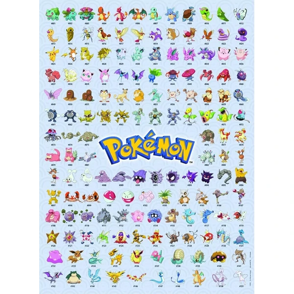
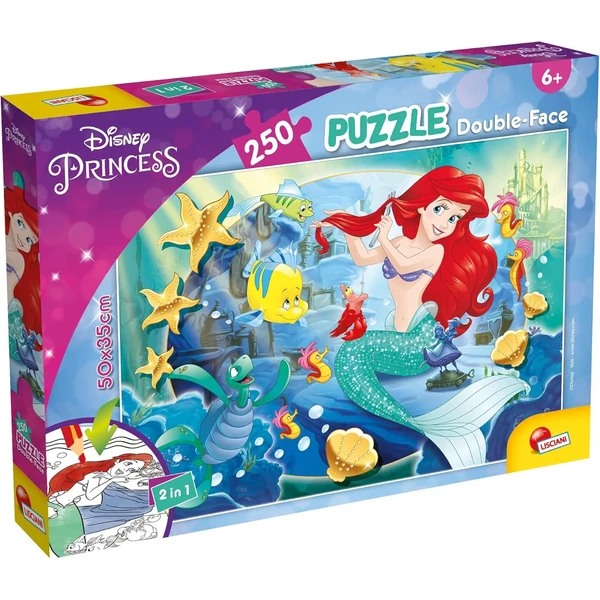
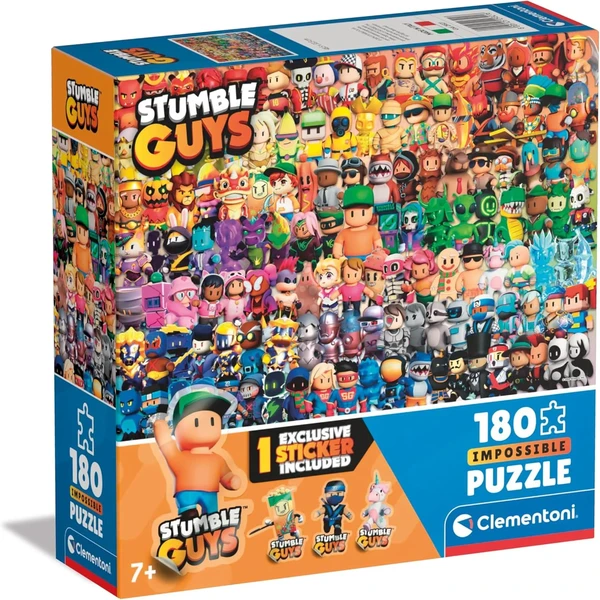
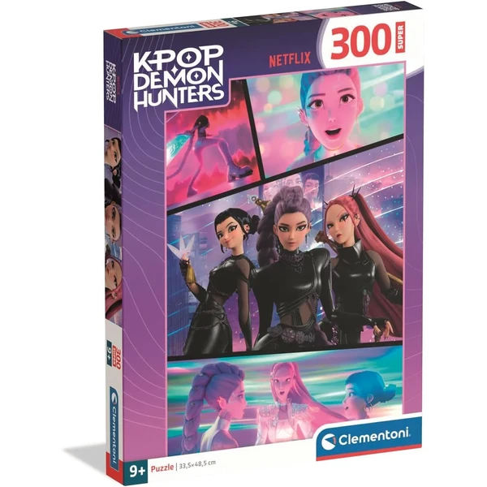

Ravensburger Puzzle XXL Pokémon
Un puzzle de 150 piezas grandes con personajes Pokémon, pensado para que las piezas encajen con facilidad gracias a la tecnología Soft-Click. Incluye póster explicativo para guiar el montaje.
⭐ ¿Por qué nos gusta?
- ✔ Piezas grandes, fáciles de manejar.
- ✔ Tecnología Soft-Click para un encaje perfecto.
- ✔ Incluye póster de referencia para montarlo.
💬 Lo que más destacan las familias
Muchos padres coinciden en que el tamaño de las piezas facilita mucho el montaje sin frustraciones. Los personajes de Pokémon resultan un aliciente extra para completarlo con motivación.
Ver en Amazon

Ravensburger Puzzle XXL Super Mario
Un puzzle de 100 piezas grandes con los personajes de Super Mario, con tecnología Soft-Click para que cada pieza encaje con precisión. Fabricado en cartón reciclado de alta calidad.
⭐ ¿Por qué nos gusta?
- ✔ 100 piezas grandes, ideales para iniciarse.
- ✔ Encaje preciso gracias a Soft-Click.
- ✔ Diseño con personajes muy populares.
💬 Lo que más destacan las familias
Entre los comentarios más habituales aparece lo bien que funciona como primer puzzle de mayor tamaño, gracias a piezas cómodas de manejar. El diseño de Super Mario despierta mucho entusiasmo entre los fans del videojuego.
Ver en Amazon

Ravensburger Puzzle 500 Piezas Pokémon
Un puzzle de 500 piezas para un reto más avanzado, con la misma tecnología Soft-Click de encaje perfecto de Ravensburger. Ideal para completar en familia durante varias sesiones.
⭐ ¿Por qué nos gusta?
- ✔ 500 piezas para un desafío más avanzado.
- ✔ Encaje preciso gracias a Soft-Click.
- ✔ Ideal para completar en varias sesiones.
💬 Lo que más destacan las familias
Se repite bastante el comentario de que supone un buen salto de dificultad respecto a los puzzles más pequeños. Es una opción popular para hacerlo en familia repartiendo el trabajo entre varias tardes.
Ver en Amazon

Lisciani Disney La Sirenita Puzzle Doble Cara
Un puzzle de 250 piezas con el mundo submarino de La Sirenita, que se puede dar la vuelta para colorear la parte trasera al terminar. Piezas gruesas y resistentes fabricadas en Italia.
⭐ ¿Por qué nos gusta?
- ✔ Doble actividad: montar y después colorear.
- ✔ Piezas gruesas y resistentes.
- ✔ Tamaño generoso de 50x35 cm una vez montado.
💬 Lo que más destacan las familias
Lo que más suele gustar es la doble función de montar y colorear, que alarga la diversión más allá del propio puzzle. El tamaño final también se valora porque queda bien para exponer.
Ver en Amazon

Lisciani Disney Del Revés 2 Puzzle Doble Cara
Un puzzle de 250 piezas con escenas de Del Revés 2, con reverso coloreable para seguir jugando una vez montado. Piezas pensadas para mejorar concentración y motricidad fina.
⭐ ¿Por qué nos gusta?
- ✔ Doble actividad: montar y después colorear.
- ✔ 250 piezas con escenas de la película.
- ✔ Mejora concentración y motricidad fina.
💬 Lo que más destacan las familias
Un detalle que aparece una y otra vez es lo bien recibido que resulta entre fans de la película, con escenas muy reconocibles. El reverso para colorear añade un extra de creatividad que se agradece.
Ver en Amazon

Clementoni Puzzle Stumble Guys
Un puzzle de 180 piezas con los personajes del videojuego Stumble Guys, fabricado con materiales reciclados en Italia. Colores vivos que atraen a los fans del juego.
⭐ ¿Por qué nos gusta?
- ✔ 180 piezas con personajes muy reconocibles.
- ✔ Fabricado con materiales reciclados.
- ✔ Colores vivos y diseño llamativo.
💬 Lo que más destacan las familias
No es raro encontrar comentarios sobre lo bien que conecta con niños fans del videojuego, algo que motiva mucho a la hora de completarlo. El tamaño de las piezas resulta cómodo para esta edad.
Ver en Amazon

Clementoni Puzzle KPOP Demon Hunters
Un puzzle de 300 piezas con el trío protagonista de KPOP Demon Hunters, con acabado antirreflejante y tecnología Perfect Fit para un encaje preciso. Fabricado en Italia con materiales de calidad.
⭐ ¿Por qué nos gusta?
- ✔ 300 piezas con acabado antirreflejante.
- ✔ Tecnología Perfect Fit para un encaje preciso.
- ✔ Diseño muy popular entre fans de la serie.
💬 Lo que más destacan las familias
Una característica muy mencionada es lo nítida que queda la imagen una vez montado gracias al acabado antirreflejante. Es una buena opción para quienes ya dominan puzzles más sencillos y buscan un reto mayor.
Ver en Amazon